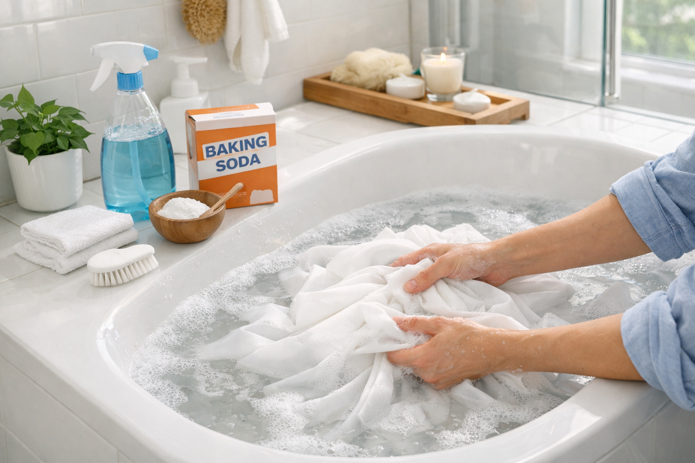

How to Clean and Maintain Your Shower Curtain (2026 Guide)

Home & Bath Expert | Bathroom decor specialist helping homeowners since 2024
This article contains affiliate links. If you purchase through these links, we may earn a small commission at no extra cost to you. Full disclosure.
Quick Answer: The Fastest Way to Clean a Shower Curtain
For fabric curtains: Machine wash on gentle/cold with 1/2 cup baking soda. Add 1 cup white vinegar to the rinse cycle. Air dry on the rod.
For vinyl or PEVA curtains: Spray with a 50/50 vinegar-water solution, scrub gently with a soft sponge, and rinse. For deeper cleaning, soak in a bathtub with warm water and baking soda for 30 minutes.
For mold removal: Apply a baking soda paste directly on mold spots, spray with vinegar, let fizz for 15 minutes, then scrub and rinse.

That pink slime creeping up the bottom of your shower curtain is not just unsightly -- it is a breeding ground for bacteria and mold. If you have been avoiding your shower curtain because scrubbing it seems like a thankless chore, you are not alone. Most homeowners wait far too long between cleanings, turning a simple 30-minute task into a full-blown mold remediation project.
The good news? Cleaning a shower curtain is much easier than most people think. Whether you have a luxurious fabric shower curtain, a practical PEVA liner, or a classic vinyl curtain, there is a cleaning method that works. In this comprehensive guide, we cover five proven cleaning methods -- from quick spray-and-wipe maintenance to deep mold removal -- plus daily habits that prevent buildup in the first place.
We also tested and recommend three easy-to-clean shower curtains that resist mold and mildew, saving you time and effort in the long run. Understanding the difference between fabric, vinyl, and PEVA materials is key to choosing the right cleaning approach, so we break that down too.

Amazon Basics Fabric Shower Curtain
Machine washable, water resistant fabric with grommets. Simply toss it in the washer on a gentle cycle for effortless cleaning every month.
Check Price on AmazonHow Often Should You Clean Your Shower Curtain?
Most bathroom cleaning guides focus on the tub, tile, and toilet -- but your shower curtain is exposed to the same moisture, soap residue, and body oils every single day. Without regular cleaning, it becomes a perfect environment for mold, mildew, and bacterial growth. According to a study published by the Centers for Disease Control and Prevention (CDC), household mold exposure can trigger respiratory issues, allergic reactions, and skin irritation, making regular shower curtain maintenance a health priority, not just a cosmetic one.
Weekly Maintenance vs. Monthly Deep Clean
The key to a clean shower curtain is combining quick weekly maintenance with a thorough monthly deep clean. Here is a practical schedule that keeps mold and buildup at bay without eating into your weekends:
| Frequency | Task | Time Required |
|---|---|---|
| After each shower | Shake the curtain and spread it out fully on the rod | 10 seconds |
| Weekly | Spray bottom third with vinegar-water solution, wipe down | 3-5 minutes |
| Monthly | Full machine wash (fabric) or bathtub soak (vinyl/PEVA) | 30-45 minutes |
| Every 3-6 months | Evaluate liner condition; replace if needed | 5 minutes |
Signs Your Shower Curtain Needs Cleaning Now
If you have fallen behind on your cleaning schedule, watch for these warning signs that your curtain needs immediate attention:
- Visible pink, orange, or black spots: Pink slime is actually a bacterial biofilm called Serratia marcescens. Black or green spots indicate true mold growth.
- Musty or damp smell: If your bathroom has a persistent musty odor even after ventilation, your shower curtain is likely the source.
- Slimy or sticky texture: Run your fingers along the bottom edge. If it feels slippery or slimy, soap scum and bacteria have built up.
- Visible soap scum film: A hazy, whitish film on the curtain surface means mineral deposits and soap residue are accumulating.
- Curtain stiffening: Vinyl and PEVA curtains that have become stiff or crinkly are overdue for a soak and clean.
How to Machine Wash a Fabric Shower Curtain
Fabric shower curtains -- whether polyester, cotton, or cotton-polyester blends -- are the easiest to clean because most are fully machine washable. This method works for the majority of fabric curtains and takes about 5 minutes of hands-on time plus the wash cycle.
What You Need
- Washing machine
- 1/2 cup baking soda
- 1 cup white distilled vinegar
- Mild liquid laundry detergent (fragrance-free preferred)
- 2 clean bath towels
Step-by-Step Instructions
Remove and Inspect
Unhook the curtain from the shower rings and check the care label. Look for specific temperature or cycle recommendations. Pre-treat any visible mold spots by dabbing with a paste of baking soda and a few drops of water. Let the paste sit for 10 minutes before loading the machine.
Load the Machine Correctly
Place the shower curtain in the washing machine along with two clean bath towels. The towels act as gentle scrubbers during the wash cycle, helping to dislodge soap scum and mildew without damaging the curtain fabric. Do not overload -- the curtain needs room to move freely.
Add Cleaning Agents and Wash
Add a small amount of mild liquid detergent and 1/2 cup of baking soda directly into the drum. Set the machine to gentle or delicate cycle with cold water. When the machine reaches the rinse cycle, add 1 cup of white vinegar to the fabric softener dispenser or directly into the drum. The vinegar neutralizes odors and dissolves remaining soap residue.
Dry Properly
Remove the curtain promptly when the cycle ends. Rehang it immediately on the shower rod and spread it out fully to air dry. The bathroom humidity will not cause issues as long as ventilation is adequate. If the care label allows tumble drying, use the lowest heat setting for no more than 10 minutes, then finish air drying on the rod. Never use high heat -- it can melt grommets and shrink certain fabrics.
How to Clean PEVA and Vinyl Shower Curtains
PEVA and vinyl shower curtains require a slightly different approach than fabric curtains. While some newer PEVA liners can handle a gentle machine wash cycle, hand washing is generally safer and more effective for plastic-based curtains. Here are three methods ranked from quickest to most thorough.
Method 1: Quick Spray Clean (5 Minutes -- Without Removing)
For weekly maintenance when the curtain does not need a deep clean:
- Fill a spray bottle with equal parts white vinegar and warm water.
- While the curtain hangs on the rod, spray the entire surface, focusing on the bottom third where mold concentrates.
- Let the solution sit for 5-10 minutes.
- Wipe down with a damp microfiber cloth or rinse with the shower head.
- Spread the curtain fully open to air dry.
Method 2: Bathtub Soak (30 Minutes)
For monthly deep cleaning or when soap scum buildup is visible:
- Fill the bathtub with enough warm water to submerge the curtain (about halfway).
- Add 1/2 cup of baking soda and stir until dissolved.
- Remove the curtain from the rod and submerge it in the water.
- Let it soak for 30 minutes. For stubborn stains, add 1 cup of white vinegar to the water after the initial 15-minute soak.
- Using a soft sponge or microfiber cloth, gently scrub both sides of the curtain, paying extra attention to the bottom edge and any areas with visible buildup.
- Drain the tub, rinse the curtain thoroughly with clean water, and rehang to air dry.
Method 3: Gentle Machine Wash (for PEVA Only)
Some PEVA curtains -- particularly thicker 8G and 10G varieties -- can tolerate a machine wash:
- Check the care label to confirm machine washability.
- Place the PEVA curtain in the machine with 2-3 bath towels (towels prevent the plastic from sticking to itself).
- Add 1/2 cup baking soda. Use no detergent or a tiny amount of mild liquid soap.
- Run on the gentlest cycle available with cold water only.
- Do not use the spin cycle if possible -- remove the curtain after the rinse cycle.
- Rehang immediately. Never put PEVA or vinyl in the dryer.
How to Remove Mold and Mildew from a Shower Curtain
Mold and mildew are the number one reason people search for shower curtain cleaning advice. The warm, damp bathroom environment is paradise for mold spores, and the shower curtain catches the brunt of daily moisture exposure. Here are four proven methods for removing mold, from the mildest to the most aggressive.
Method 1: Baking Soda + Vinegar (Recommended First Approach)
This is the safest, most versatile method that works on all curtain materials without risk of damage or discoloration:
- Lay the curtain flat in the bathtub or on a clean surface.
- Make a paste of 3 tablespoons baking soda and 1 tablespoon water.
- Apply the paste directly to every mold and mildew spot using your fingers or an old toothbrush.
- Spray white vinegar over the baking soda paste. The fizzing reaction helps lift mold from the surface.
- Let it sit for 15-20 minutes.
- Scrub with a soft brush in circular motions.
- Rinse thoroughly with clean water and rehang to dry.
Method 2: Hydrogen Peroxide (For Stubborn Mold Without Bleach)
Hydrogen peroxide is an effective alternative for those who want to avoid both bleach and strong odors:
- Pour 3% hydrogen peroxide into a spray bottle (no dilution needed).
- Spray generously on all mold-affected areas.
- Let it sit for 10-15 minutes. You may see slight fizzing as it works.
- Scrub with a soft brush, then rinse thoroughly.
- For severe mold, repeat the application a second time before rinsing.
Method 3: Tea Tree Oil Solution (Natural Antifungal)
Tea tree oil is a natural antifungal and antimicrobial agent. While it takes longer to work, it leaves behind a pleasant scent and continues to inhibit mold growth after cleaning:
- Mix 1 teaspoon of tea tree essential oil with 1 cup of water in a spray bottle.
- Shake well before each use (oil and water separate quickly).
- Spray the affected areas liberally.
- Do not rinse. Let the solution dry on the curtain. The tea tree oil residue continues to fight mold spores.
- For heavy mold, apply a second coat after the first has dried.
Method 4: Diluted Bleach (Last Resort for Severe Black Mold)
Reserve bleach for severe cases where other methods have failed, and only use it on white curtains or clear liners:
- Mix 1/4 cup bleach per gallon of water in the bathtub.
- Submerge the curtain and soak for 15-20 minutes. Do not exceed 30 minutes.
- Scrub remaining mold spots with a brush.
- Drain and rinse the curtain three full times with clean water to remove all bleach residue.
- Rehang to air dry with the bathroom window open or exhaust fan running.
How to Remove Soap Scum and Hard Water Stains
Soap scum and hard water stains are different from mold -- they are mineral and fat deposits that create a hazy, rough film on your curtain. If your curtain looks dull or cloudy rather than spotted, soap scum is likely the culprit. Here is how to tackle each type of buildup.
Soap Scum Removal
Soap scum forms when the fatty acids in bar soap combine with minerals in your water. The most effective removal method depends on severity:
- Mild buildup: Spray with undiluted white vinegar, let sit 10 minutes, and wipe with a microfiber cloth. Repeat if needed.
- Moderate buildup: Make a paste of baking soda and dish soap (Dawn works well). Apply to the scummy areas, let sit 15 minutes, scrub with a soft brush, and rinse.
- Heavy buildup: Soak in a bathtub with warm water and 2 cups of white vinegar for 1 hour. The acid in vinegar dissolves the fatty deposits. Scrub, drain, and rinse.
Hard Water Stain Removal
If you live in an area with hard water (high calcium and magnesium content), you may notice white, chalky deposits on your curtain that do not respond to regular soap or detergent:
- Vinegar soak: Hard water stains are alkaline mineral deposits, and vinegar (an acid) dissolves them effectively. Soak affected areas in undiluted white vinegar for 30 minutes, then scrub.
- Lemon juice: For lighter stains, rub a cut lemon directly on the deposits. The citric acid works similarly to vinegar with a more pleasant scent.
- Commercial descaler: For extremely hard water areas, a calcium-lime-rust (CLR) remover can be used on vinyl and PEVA curtains. Avoid using chemical descalers on fabric curtains.
Prevention: Daily Habits That Keep Your Curtain Clean
The best cleaning routine is one you rarely have to do. These daily and weekly habits dramatically reduce mold, mildew, and soap scum buildup, extending the life of your shower curtain and making monthly deep cleans much faster.
After Every Shower (30 Seconds)
- Shake and spread: After you step out, give the curtain a quick shake to remove water droplets, then spread it out fully across the rod. A bunched-up curtain traps moisture in the folds -- the number one cause of mold growth.
- Ventilate: Turn on the exhaust fan and leave it running for at least 20 minutes after your shower. If you do not have an exhaust fan, open the bathroom door and a nearby window. Proper airflow is the single most effective mold prevention strategy.
- Squeegee (optional): If you have a glass door alongside your curtain, a quick squeegee pass removes 90% of the water that causes buildup.
Weekly Maintenance (5 Minutes)
- Vinegar spray: Keep a spray bottle of 50/50 white vinegar and water in the bathroom. Once a week, spray the bottom third of your curtain where moisture lingers longest.
- Wipe the bottom hem: Run a damp cloth along the bottom edge of the curtain where soap scum and mildew accumulate first.
- Check the liner: If you use a separate shower curtain liner, inspect it weekly. Liners are the first line of defense and take the brunt of water contact.
Use the Right Liner
A quality liner is the most underrated tool for keeping your decorative shower curtain clean. The liner absorbs the direct water contact, soap splatter, and steam exposure, while your outer curtain stays relatively dry and clean.
- PEVA liners are mold-resistant, non-toxic, and affordable. Replace every 3-6 months. See our best PEVA liner picks.
- Fabric liners are machine washable and more eco-friendly, but require regular washing to prevent mold. The N&Y HOME Fabric Liner is our top pick for washability.
- Antimicrobial liners are treated with mold-inhibiting compounds and stay cleaner longer between washes.
When to Replace Instead of Cleaning
There comes a point when cleaning is no longer worth the effort. Knowing when to replace your shower curtain saves you time and protects your health. Here are the clear signs it is time for a new one:
Replace Your Curtain If:
- Black mold persists after two thorough cleanings: If you have used the baking soda + vinegar method and the hydrogen peroxide method, and black mold spots are still visible, the mold has penetrated the material. No amount of surface cleaning will eliminate it.
- The material is cracking, tearing, or brittle: Vinyl and PEVA curtains degrade over time, especially with heat and UV exposure. Once cracking begins, the curtain can no longer repel water effectively and crevices harbor mold.
- Permanent discoloration or staining: Yellow, gray, or brown discoloration that does not respond to any cleaning method indicates the material has absorbed stains beyond the surface level.
- Persistent odor after cleaning: If your curtain smells musty even after a deep clean and thorough drying, bacteria and mold have infiltrated the material.
- Grommets or reinforced holes are rusting or torn: Once the hanging mechanism fails, the curtain sags and bunches, accelerating mold growth in the folds.
Typical Lifespan by Material
| Material | Expected Lifespan | Replacement Frequency |
|---|---|---|
| Vinyl liner | 3-6 months | 2-4 times per year |
| PEVA liner | 4-8 months | 2-3 times per year |
| Polyester fabric | 1-2 years | Once per year (with regular washing) |
| Cotton or cotton-blend | 1-3 years | Once every 1-2 years |
| Hotel-style waffle weave | 2-4 years | Once every 2 years |
When it is time to replace, consider upgrading to a waterproof shower curtain that combines the decorative look of fabric with the water resistance of a liner, eliminating the need for a separate liner entirely.
Best Easy-to-Clean Shower Curtains (Top 3 Picks)
If you are tired of fighting mold and scrubbing soap scum, investing in a curtain designed for easy maintenance is worth every penny. After researching over 50 shower curtains and liners, these three stand out for their washability, mold resistance, and overall quality.
1. Amazon Basics Bathroom Shower Curtain
Best For: Anyone who wants a toss-in-the-washer solution with zero fuss
- Water resistant polyester fabric
- Machine washable on gentle cycle
- Reinforced metal grommets
- Standard 72" x 72" fits most tubs
- Hooks included in the package
Pros
- Extremely affordable
- Fully machine washable
- Dries quickly on the rod
- 45,000+ positive reviews
Cons
- Needs a separate liner for full waterproofing
- Limited color options
The Amazon Basics fabric shower curtain is the easiest-to-clean option in our lineup. The water-resistant polyester fabric goes straight into the washing machine on a gentle cycle with cold water. There is no need for special detergents or hand washing. After dozens of machine washes, the fabric maintains its shape and the grommets show no signs of rust or loosening.
At under $8, this curtain is practically disposable, but you will not need to replace it for at least a year with monthly machine washing. Pair it with a PEVA liner for complete water protection, and you have a low-maintenance setup that costs less than $20 total.
Check Price on Amazon
2. LiBa Bathroom PEVA Shower Curtain
Best For: Mold prevention in humid bathrooms
- Premium 8G PEVA material (PVC-free, non-toxic)
- Rust-proof metal grommets
- Waterproof without a separate liner
- Clear design lets light through
- Easy wipe-clean surface
Pros
- Non-toxic, chlorine-free PEVA
- Resists mold and mildew buildup
- Over 250,000 verified reviews
- No chemical odor out of the box
Cons
- Not machine washable (hand wash only)
- Needs replacing every 4-8 months
With over a quarter million reviews on Amazon, the LiBa PEVA shower curtain is the most popular plastic liner for a reason. The 8G gauge PEVA material resists mold and mildew significantly better than thinner liners, and the non-toxic formulation means no chlorine smell when you first hang it. The smooth PEVA surface makes cleaning effortless -- a quick spray and wipe with vinegar solution is all it takes for weekly maintenance.
For deep cleaning, simply soak it in a bathtub with warm water and baking soda for 30 minutes. The LiBa liner works beautifully behind a decorative fabric shower curtain, giving you the best of both worlds: style in front and easy-clean protection behind.
Check Price on Amazon
3. N&Y HOME Fabric Shower Curtain Liner
Best For: Eco-conscious buyers who want a washable, reusable liner
- Soft fabric liner with waterproof coating
- Machine washable and reusable
- Built-in magnets hold the liner in place
- Hotel quality white finish
- Standard 70" x 72" size
Pros
- Machine washable for easy cleaning
- Magnets prevent billowing
- More eco-friendly than disposable plastic
- Soft fabric feel
Cons
- Requires monthly washing to prevent mildew
- Slightly pricier than basic PEVA liners
The N&Y HOME fabric liner bridges the gap between disposable plastic liners and decorative curtains. It is fully machine washable, which means you can maintain it the exact same way as your fabric shower curtain -- toss it in the wash monthly with baking soda and vinegar. The built-in magnets at the bottom hem keep the liner clinging to the tub, preventing that annoying billowing effect in the shower.
Unlike PEVA liners that need replacing every few months, a well-maintained N&Y HOME fabric liner lasts 12-18 months with regular monthly washing. At under $9, the cost-per-use makes it an exceptional value, especially compared to buying 3-4 disposable liners per year. This is the liner we recommend pairing with any of the top shower curtains of 2026.
Check Price on AmazonQuick Comparison: Our Top 3 Picks
| Product | Type | Best For | Rating | Price |
|---|---|---|---|---|
| Amazon Basics Fabric | Polyester fabric | Machine washing ease | 4.6/5 | $7.74 |
| LiBa PEVA 8G | PEVA plastic | Mold resistance | 4.5/5 | $8.59 |
| N&Y HOME Fabric Liner | Fabric liner | Reusable eco-friendly | 4.6/5 | $8.96 |
Frequently Asked Questions About Cleaning Shower Curtains
Q: Can you put a shower curtain in the washing machine?
Yes, most fabric shower curtains are machine washable. Use cold water on a gentle or delicate cycle, add 1/2 cup of baking soda to the wash cycle, and add 1 cup of white vinegar to the rinse cycle. Include two bath towels as gentle scrubbers. Air dry by rehanging on the rod -- avoid high heat in the dryer. Some thicker PEVA liners (8G and above) can also tolerate a gentle machine wash, but always check the care label first. Never machine wash thin vinyl curtains, as they can melt, tear, or stick to themselves during the cycle.
Q: How do you get mold out of a shower curtain without bleach?
The most effective bleach-free method is a baking soda and vinegar combination. Make a paste of baking soda and water, apply it directly to mold spots, then spray with white vinegar and let the fizzing reaction work for 15 minutes before scrubbing. For stubborn mold, soak the entire curtain in a bathtub filled with warm water, 1 cup of vinegar, and 1/2 cup of baking soda for 30 minutes. Alternatively, spray affected areas with undiluted 3% hydrogen peroxide, let sit for 10-15 minutes, and scrub clean. Tea tree oil (1 teaspoon per cup of water) is another natural antifungal option.
Q: How often should you wash your shower curtain?
Deep clean your shower curtain once a month -- either by machine washing (fabric) or bathtub soaking (vinyl/PEVA). Between monthly deep cleans, do a quick weekly spray-and-wipe with a 50/50 white vinegar and water solution, focusing on the bottom third of the curtain. Daily, spread the curtain out fully on the rod after each shower and run the exhaust fan for 20 minutes. Replace disposable plastic liners every 3 to 6 months. With proper maintenance, fabric curtains last 1-2 years before needing replacement.
Q: Can you clean a shower curtain without taking it down?
Yes, for routine weekly maintenance. Fill a spray bottle with a 50/50 mixture of white vinegar and water. Spray the entire curtain while it hangs, focusing on the bottom third where mold and soap scum accumulate first. Let the solution sit for 10 minutes, then wipe with a damp microfiber cloth or rinse with the shower head. This method works well for weekly upkeep but is not a substitute for a monthly deep clean. For mold spots, you can apply baking soda paste directly to the affected areas while the curtain hangs, spray with vinegar, wait 15 minutes, and scrub.
Q: Should you throw away a moldy shower curtain?
Not necessarily -- try cleaning it first. Most mold and mildew on shower curtains is surface-level and responds well to the baking soda + vinegar method or hydrogen peroxide treatment. However, if black mold persists after two thorough cleaning attempts using different methods, the mold has likely penetrated the material and cannot be fully removed. At that point, replacement is the healthier choice. Also replace the curtain if the material is cracking, permanently discolored, or still smells musty after cleaning and thorough drying. Inexpensive liners (under $10) are designed to be replaced regularly -- treating them as semi-disposable is both practical and hygienic.
Keep Your Shower Curtain Fresh: Final Recommendations
Cleaning your shower curtain does not have to be a dreaded chore. With the right method for your curtain material and a simple weekly maintenance routine, you can keep mold, mildew, and soap scum at bay with minimal effort. Here is a quick recap of the best approach for each situation:
- For easy machine washing: Amazon Basics Fabric Shower Curtain -- toss it in the washer monthly with baking soda and vinegar for effortless cleaning at just $7.74.
- For maximum mold resistance: LiBa PEVA 8G Shower Curtain -- non-toxic PEVA surface resists mold naturally and wipes clean in minutes for $8.59.
- For a reusable eco-friendly liner: N&Y HOME Fabric Liner -- machine washable fabric liner with magnets at $8.96, lasting 12-18 months with monthly washing.
- For prevention: Spread the curtain after every shower, ventilate for 20 minutes, and spray weekly with vinegar-water solution. These daily habits cut cleaning time by 80%.
Remember: the material of your curtain determines the best cleaning method. Fabric goes in the washing machine. Vinyl and PEVA get a bathtub soak or spray-and-wipe. Mold responds to baking soda and vinegar before you reach for harsh chemicals. And the single most important habit is spreading your curtain out to dry after every shower.
If your current curtain is beyond saving, all three of our recommended picks are under $10, so replacing it is both affordable and worthwhile. For more guidance on choosing the right material, read our detailed comparison of fabric vs. vinyl vs. PEVA shower curtains, or browse our top 7 best shower curtains of 2026 for the latest recommendations.